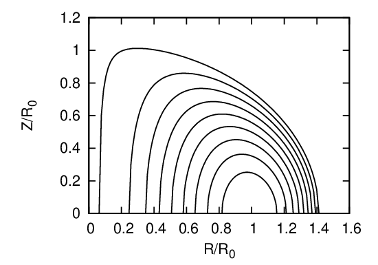

For most choices of P(Ψ) and g(Ψ), the GS equation (65) has to be solved numerically. For the particular choice of P and g profiles given by
|
| (504) |
 | (505) |
analytical solution to the GS equation can be found, which is given by[15]
 | (506) |
where c0, c1, c2, and R0 are arbitrary constants. [Proof: By direct substitution, we can verify Ψ of this form is indeed a solution to the GS equation (65).] A useful choice for tokamak application is to set c0 = B0∕(R02κ0q0), c1 = B0(κ02 + 1)∕(R02κ0q0), and c2 = 0. Then Eq. (506) is written
![[ 2 ]
Ψ = ---B20-- R2Z2 + κ0(R2 − R20)2 ,
2R 0κ0q0 4](tokamak_equilibrium644x.png) | (507) |
which can be solved analytically to give the explicit form of the contour of Ψ on (R,Z) plane:
 | (508) |
which indicates the magnetic surfaces are up-down symmetrical. Using Eq. (504), i.e.,
|
| (509) |
the pressure is written
 | (510) |
where P0 is a constant of integration. Note Eq. (507) indicates that that Ψ = 0 at the magnetic axis (R = R0,Z = 0). Therefore, Eq. (510) indicates that P0 is the pressure at the magnetic axis. The toroidal field function g is a constant in this case, which implies there is no poloidal current in this equilibrium. (For the Solovev equilibrium (507), I found numerically that the value of the safety factor at the magnetic axis (R = R0,Z = 0) is equal to q0g∕(R0B0). This result should be able to be proved analytically. I will do this later. In calculating the safety factor, we also need the expression of |∇Ψ|, which is given analytically by
![∘ (----)2--(----)2
|∇ Ψ | = ∂Ψ- + ∂Ψ-
∂R ∂Z
--B0---∘ ----2---2--2----2---2-----2--2-
= 2R2κ0q0 [2RZ + κ0(R − R0)R] + (2R Z) . (511)
0](tokamak_equilibrium648x.png)
 
Define Ψ0 = B0R02, and Ψ = Ψ∕Ψ0, then Eq. (507) is written as
where R = R∕R0, Z = Z∕R0. From Eq. (512), we obtain
 | (513) |
Given the value of κ0, q0, for each value of Ψ, we can plot a magnetic surface on (R,Z) plane. An example of the nested magnetic surfaces is shown in Fig. 37.

The minor radius of a magnetic surface of the Solovev equilibrium can be calculated by using Eq. (508), which gives
 | (514) |
 | (515) |
and thus
 | (516) |
where A = 8R02q0∕(B0κ0). In my code of constructing Solovev magnetic surface, the value of a is specified by users, and then Eq. (516) is solved numerically to obtain the value of Ψ of the flux surface. Note that the case Ψ = 0 corresponds to Rin = Rout = R0, i.e., the magnetic axis, while the case Ψ = R02B0κ0∕(8q0) corresponds to Rin = 0. Therefore, the reasonable value of Ψ of a magnetic surface should be in the range 0 ≤ Ψ < R02B0κ0∕(8q0). This range is used as the interval bracketing a root in the bisection root finder.
Using Eq. (516), the inverse aspect ratio of a magnetic surface labeled by Ψ can be approximated as[15]
 | (517) |
Therefore, the value of Œ® of a magnetic surface with the inverse aspect ratio ùúÄ is approximately given by
 | (518) |